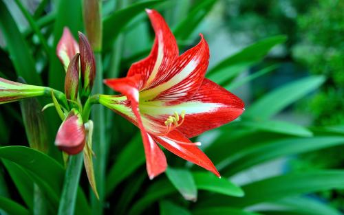

全国咨询热线：400-123-4567
全国咨询热线：400-123-4567

美人草，正名为：美丽异木棉，美人树花期长达三个月。花单生，花苞圆珠状，花冠淡紫红色，树冠呈伞形，叶色青翠，树干下部膨大，呈酒瓶状，树皮绿色，密生圆锥状皮刺。叶互生，掌状复叶有小叶小叶3-7片；小叶椭圆形...
关注人数：3369
蓝花楹，紫葳科落叶乔木，高达15米。原产南美洲巴西，叶对生，为2回羽状复叶，羽片通常在16对以上，每1羽片有、小叶16-24对；小叶椭圆状披针形至椭圆状菱形，长6-12毫米，宽2-7毫米，顶端急尖，基部楔形，全缘。花蓝色，花...
关注人数：3585
西府海棠为蔷薇科苹果属的植物，小乔木，高达2.5-5米，树枝直立性强，为木兰纲、蔷薇科、苹果属的植物，小乔木，高达2.5-5米，树枝直立性强，为中国的特有植物。西府海棠在北方干燥地带生长良...
关注人数：2521
小叶黄杨是黄杨科，黄杨属灌木，生长低矮，枝条密集，枝圆柱形，小枝四棱形，叶薄革质，阔椭圆形或阔卵形，叶片无光或光亮，侧脉明显凸出；头状花序，腋生，密集，花序被毛，苞片阔卵形．雄花无花...
关注人数：521

黄杨盆景，材料大都取自水畔的野生老桩，以其叶小常绿，生长缓慢不易变型而成为艺术珍品。盆色以紫色或浅黄为多...
关注人数：221

五针松盆景，以针叶最短（叶长2厘米左右）、枝条紧密的大板松最为名贵。目前，五针松盆景已在中国各...
关注人数：721
真柏盆景，柏科属，匍匐灌木，高达75厘米，枝条延地面扩展，褐色，密生小枝，枝梢及小枝向上斜展...
关注人数：2111
榆树落叶乔木，高达25米，树冠圆球形。树皮灰黑色，纵裂而粗糙。小枝灰色，少页，常排列成二列状...
关注人数：521

千佛手又名王玉珠帘、菊丸，是景天科的多肉植物，幼株比较矮小，多年生老株会形成垂吊状，非常适合家庭盆栽景天属...
关注人数：621

黄丽。是景天科，景天属多年生多肉植物。北方干燥地带生长良，光照充足情况下，叶片边缘会泛红，花单瓣，聚伞花序...
关注人数：253

桃美人是隶属于景天科、厚叶草属的多年生植物，多肉植物。是由月美人和稻田姬杂交而来的园艺品种。...
关注人数：121
宝石花，一类多肉植物的统称。正名：石花，别名：石莲花、石胆草、粉莲、胧月、初霜，民间泛指莲花座造型的多肉植物...
关注人数：21

君子兰，别名剑叶石蒜、大叶石蒜，是石蒜科君子兰属的观赏花卉。原产于南非南部平原地带...
关注人数：51

仙客来，别名萝卜海棠、兔耳花、兔子花、一品冠、篝火花、翻瓣莲，是报春花科、仙客来属多年生草...
关注人数：99

天竺葵，别名洋绣球、石腊红、入腊红、日烂红、洋葵，属牻牛儿苗科，包括约230种多年生植物...
关注人数：69
朱顶红又名红花莲（海南植物志）、华胄兰（华北经济植物志要）、线缟华胄、柱顶红...
关注人数：35
大丽花，别名大理花、天竺牡丹、东洋菊、大丽菊、地瓜花，菊科、大丽花属植物，多年生草本...
关注人数：77
风铃草为桔梗科的一年生、二年生或多年生草本。花钟状，通常蓝色，喜夏季凉爽、冬季温和的...
关注人数：84
锦葵科风铃花，花钟状，通常蓝色，喜夏季凉爽，又名纹瓣悬铃花。风铃花原产南美洲...
关注人数：15
九里香，又称：石辣椒、九秋香、九树香、七里香、千里香、万里香、过山香、黄金桂、山黄皮九里香属常绿灌木，有时可长成小乔木样，株姿优美，枝叶秀丽，花香浓郁。根、茎、叶所含...
关注人数：96
荼蘼，又名酴醾、佛见笑、重瓣空心泡，是蔷薇科悬钩子属空心泡的变种。直立或攀援灌木，高2-3米；小枝圆柱形，具柔毛或近无毛，常有浅黄色腺点，疏生较直立皮刺。...
关注人数：585
 一流的服务
一流的服务 透明的价格
透明的价格 重信守义
重信守义 优质的苗木
优质的苗木